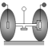

RollingWheelSetIdeal rolling wheel set consisting of two ideal rolling wheels connected together by an axis |

|
Diagram
{kind=link}
Information
This information is part of the Modelica Standard Library maintained by the Modelica Association.
Two wheels are connected by an axis and can rotate around this axis. The wheels are rolling on the x-y plane of the world frame. The coordinate system attached to the center of the wheel axis (frameMiddle) is constrained so that it is always parallel to the x-y plane. If all generalized coordinates are zero, frameMiddle is parallel to the world frame.
Note
To work properly, the gravity acceleration vector g of the world must point in the negative z-axis, i.e.
inner Modelica.Mechanics.MultiBody.World world(n={0,0,-1});
Parameters (10)
| animation |
Value: true Type: Boolean Description: = true, if animation of wheel set shall be enabled |
|---|---|
| R_wheel |
Value: Type: Radius (m) Description: Radius of one wheel |
| m_wheel |
Value: Type: Mass (kg) Description: Mass of one wheel |
| I_wheelAxis |
Value: Type: Inertia (kg·m²) Description: Inertia along one wheel axis |
| I_wheelLong |
Value: Type: Inertia (kg·m²) Description: Inertia perpendicular to one wheel axis |
| track |
Value: Type: Distance (m) Description: Distance between the two wheels (= axle track) |
| stateSelect |
Value: StateSelect.always Type: StateSelect Description: Priority to use the generalized coordinates as states |
| width_wheel |
Value: 0.01 Type: Distance (m) Description: Width of one wheel |
| hollowFraction |
Value: 0.8 Type: Real Description: For ring-like wheel visualization: wheel radius / inner hole radius; i.e. 1.0: completely hollow, 0.0: full disc |
| color |
Value: {30, 30, 30} Type: Color Description: Color of wheels |
Connectors (6)
| frameMiddle |
Type: Frame_a Description: Frame fixed in middle of axis connecting both wheels (y-axis: along wheel axis, z-axis: upwards) |
|
|---|---|---|
| frame1 |
Type: Frame_a Description: Frame fixed in center point of left wheel (y-axis: along wheel axis, z-axis: upwards) |
|
| frame2 |
Type: Frame_b Description: Frame fixed in center point of right wheel (y-axis: along wheel axis, z-axis: upwards) |
|
| axis1 |
Type: Flange_a Description: 1-dim. rotational flange that drives the left wheel |
|
| axis2 |
Type: Flange_a Description: 1-dim. rotational flange that drives the right wheel |
|
| support |
Type: Flange_b Description: Support of 1D axes |
Components (5)
| body2 |
Type: Body |
|
|---|---|---|
| shape2 |
Type: FixedShape |
|
| body1 |
Type: Body |
|
| shape1 |
Type: FixedShape |
|
| wheelSetJoint |
Type: RollingWheelSet |
Used in Examples (2)
|
Modelica.Mechanics.MultiBody.Examples.Elementary Rolling wheel set that is driven by torques driving the wheels |
|
|
Modelica.Mechanics.MultiBody.Examples.Elementary Rolling wheel set that is pulled by a force |